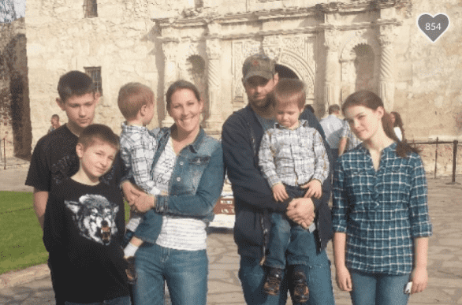
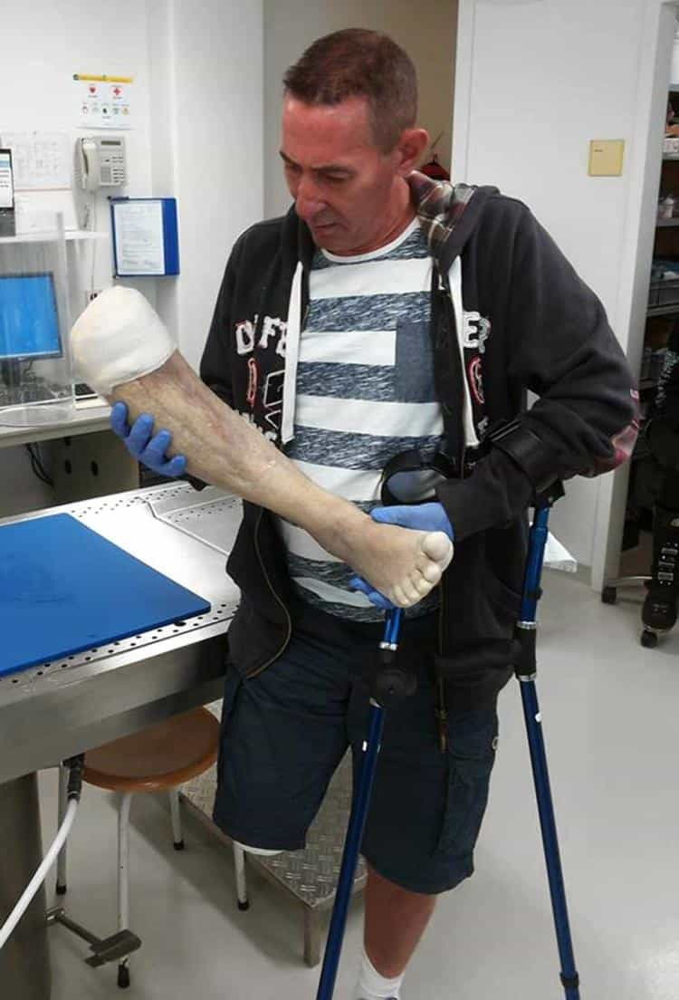

The Kleins were subjected to a homofascist mob that boycotted their business, threatened other wedding vendors and subjected their young children to death threats.
— Fox News describing how Aaron and Melissa Klein were vilified, stalked, and intimidated with serious threats of violence after declining to make two lesbians a wedding cake.
Two Oregon-based lesbians have hit the jackpot, with a court ruling that they must receive $135,000 in damages because a Christian bakery would not make them a wedding cake. The triggered women, Rachel and Laurel Bowman-Cryer, previously said they were “mentally raped” by the experience. The couple in charge of the bakery, Aaron and Melissa Klein, lost the case in the Oregon Court of Appeals in December, with next to no chance that they can proceed further.
The Kleins have faced four years of hardship because they stuck to their Christian beliefs. As a result of their religious commitment, they are being slapped with an official penalty that resembles ones handed out in many of the worst negligence cases, where plaintiffs have lost limbs, been confined to wheelchairs, or been physically tortured and brutalized. In addition to the court sanctions, their business has been targeted, if not destroyed and they have spent tens of thousands of dollars on legal fees.

The Klein family will be bankrupted by this ordeal.
Whilst I am not normally one to advocate surrender, the ability of privileged minority groups to easily win paydays from you means that giving up early in these kinds of circumstances is probably the best thing you can do. Unless you want to be a martyr, that is.
Oregon, which we like to refer to at ROK as “colder California,” has a history of SJW-inspired legal overreach, including a successful attempt by the authorities there to bankrupt a bar owner over his beliefs about transsexuals. It joins both the Golden (Shower) State and Washington in a never-ending quest to out-SJW northeastern states like New York, Massachusetts, Rhode Island, and Connecticut.
$135,000 for not getting a cake, but only $500,000 when your leg gets ripped off

Yes, not getting a cake made is naturally comparable to losing your leg in an accident. And just as excruciating when it happens, surely!
Oregon is just one place where histrionic people, particularly women, benefit by being out of control, highly emotional whackos. The more ridiculously triggered and “traumatized” you appear to a court, the more money you will receive.
A man whose leg was torn from his body by a garbage truck in Oregon only got $500,000 for his pain and suffering. He may have been awarded nearly four times more than the lesbians denied a cake, yet he should have netted at least 1,000 times more, presuming that compensation for the lesbians was even warranted. $135,000 in damages for someone saying no to baking your cake makes an absolute mockery of the legal system.
Alas, this is the end result of post-modernist-style thinking infecting our society. Rachel and Laurel Bowman-Cryer listed nearly 100 emotional and psychological symptoms they said the Kleins inflicted upon them by not taking their business. Such a long, self-entitled list reads like the potentially legitimate ailments of an American soldier who might have served in World War II at Monte Cassino, Normandy, throughout the Battle of the Bulge, and when Iwo Jima was taken from the Japanese. Sadly, we’re actually talking about two fat lesbians getting incensed over a party dessert.
Doctors and others are next
First they came for the bakers and at present they’re clawing at the medical professionals. For instance, a local doctor I know in Australia refuses to participate in either abortion procedures or prescribing abortion-related drugs due to his Christian faith. Perhaps the pro-leftist laws have tightened in Australia during my absence, but they certainly have already in places like Canada. Doctors in many a province there must refer patients to abortion-providing doctors or perform the abortion itself if other doctors are unable to do it. Worse still, “unable” is frequently defined in a very loose and amorphous way to increase the chances that the reluctant initial physician must take part.
Rachel and Laurel Bowman-Cryer could have simply gone to another bakery. Instead, they kicked up a fuss and saw dollar signs from the very beginning. Likewise, we can safely expect a raft of future cases involving doctors and others who will have to hand over small or large fortunes to opportunistic plaintiffs who are usually just unhappy with themselves or their lives, desperately searching for a scapegoat.
There is no such thing as (Christian) religious freedom in the modern United States or the West in general anymore. The next item on the SJW agenda may be criminalizing Catholics, Mormons, and evangelicals who refuse to marry gay couples. Watch this space.
Read More: Oregon State Government Bankrupts Bar Owner For Refusing To Serve Transsexuals